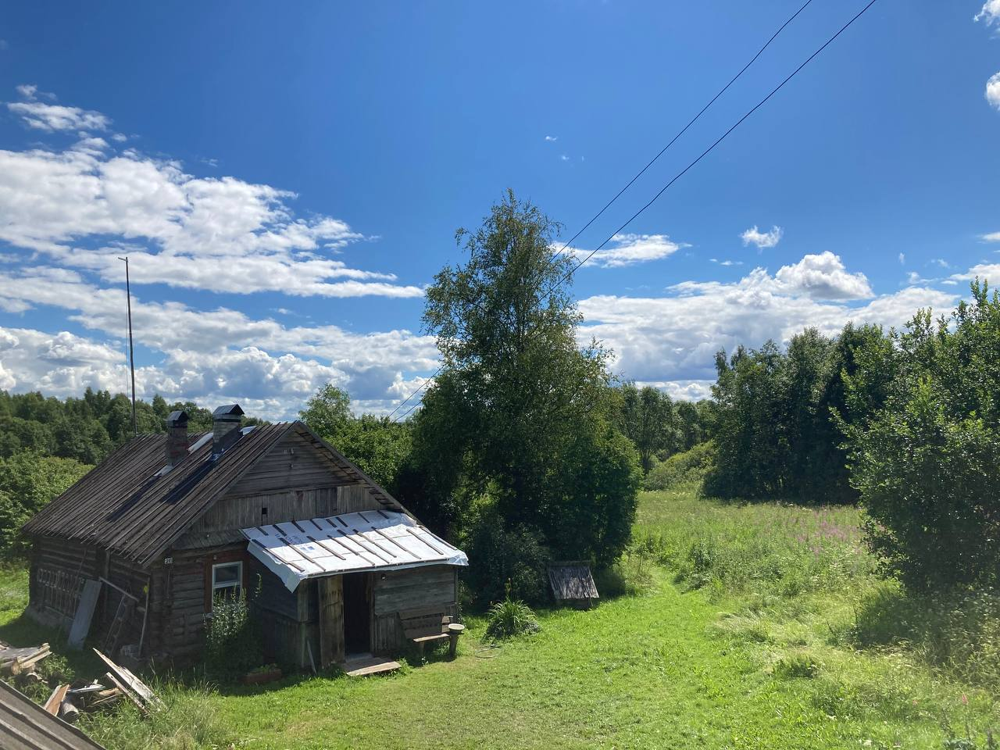

Expeditions
Dialects of the Zapadnodvinsky District, Tver Oblast

Expeditions
2021JanuaryTerekhovo
Preliminary recordings
- R. V. Ronko
- M. A. Kholodilova
2021JulyShetnevo
Team
- A. S. Azanova, Z. A. Butenko, M. S. Zambrzhitskaya, I. A. Marchenko, D. I. Mochulsky, R. V. Ronko, E. I. Tseytina
Expedition Topics
- A. S. Azanova Intonation contours
- M. S. Zambrzhitskaya Intonation contours
- Z. A. Butenko Connection of -shi forms with narrative type
- I. A. Marchenko Syntactic combinability of predicatives with modal meaning
- D. I. Mochulsky Yakanye
- E. I. Tseytina Participle system
2022JulyTerekhovo
Team
- A. S. Azanova, A. D. Anisimov, E. E. Voitovich, E. A. Zalivina, M. S. Zambrzhitskaya, S. A. Zemlyanskaya, I. A. Marchenko, D. I. Mochulsky, R. V. Ronko
Expedition Topics
- A. D. Anisimov Reflexive affix
- I. A. Marchenko Genitive, Dative and Locative case systems of the a-declension
- D. I. Mochulsky Morphology of personal pronouns
- E. A. Zalivina Verbal morphology in the 3rd person present
- M. S. Zambrzhitskaya Realization of /v/
- S. A. Zemlyanskaya Instrumental case
- General topic DARYA lexicon
2023April–MayTerekhovo
Team
- R. V. Ronko, A. S. Azanova, A. D. Anisimov, E. E. Voitovich, M. V. Ermolova, E. A. Zalivina, M. S. Zambrzhitskaya, A. S. Kuzmina, A. V. Manusov, I. A. Marchenko, D. I. Mochulsky, M. S. Smolkina
Expedition Topics
- A. D. Anisimov DARYA lexicon
- A. S. Azanova Prepositions 's' and 'iz'
- E. A. Zalivina Combinations with numerals
- M. S. Zambrzhitskaya Hard [š:]. In correspondence with the long soft sibilant [š':]
- A. S. Kuzmina Inflection/word formation: names of young domestic animals in singular and plural in the villages of Makeevo, Shetnevo, Shchelkino. Verbs of giving birth
- A. V. Manusov Degrees of comparison
- D. I. Mochulsky Prepositions
- M. S. Smolkina Competition of relative pronouns in the dialects of Shetnevo and Makeevo
2023OctoberKaskovo
Team
- E. E. Voitovich, D. I. Mochulsky, M. S. Smolkina, P. D. Tretyakova
Expedition Topics
- E. E. Voitovich Experiment on participle agreement
- D. I. Mochulsky Vocalism and consonantism in the dialect of Pyatiusovo; prepositions
- P. D. Tretyakova Experiment on nominative object
- M. S. Smolkina The conjunction 'poka' in the dialects of Shetnevo, Makeevo and Pyatiusovo
2024July–AugustKaskovo
Team
- E. V. Ageeva, A. V. Antsupova, A. S. Azanova, P. S. Gumerova, A. S. Kuzmina, A. V. Manusov, V. E. Monina, R. V. Ronko, M. S. Smolkina
Expedition Topics
- A. S. Azanova Syntax of object case
- A. S. Kuzmina Verbal morphology in 3rd person present: comparison of Makeevo and Pyatiusovo dialect clusters
- A. V. Manusov DN and BM assimilations in the dialect of Pyatiusovo
- A. V. Antsupova Preposition omission
- E. V. Ageeva System of participle usage
- P. S. Gumerova Adverbs of time and place
- V. E. Monina Intonation contour of echo questions
- M. S. Smolkina Relative constructions in Pyatiusovo and Shetnevo/Makeevo
2025April–MayKaskovo
Team
- A. A. Askarova, E. V. Ageeva, M. S. Zambrzhitskaya, S. S. Zemicheva, A. S. Kuzmina, D. Yu. Nikitenko, A. V. Manusov, F. A. Pleshakov, S. A. Ponomaryova, R. V. Ronko, M. S. Smolkina
Expedition Topics
- E. V. Ageeva System of participle usage
- A. A. Askarova Preposition repetition
- F. A. Pleshakov Preposition repetition
- D. Yu. Nikitenko Accentual paradigms of a-declension words
- S. A. Ponomaryova Dialect word-formation models
- M. S. Smolkina Relative pronouns in the dialects of Shetnevo/Makeevo and Pyatiusovo
2026June–JulyKaskovo
Team
- A. Yu. Grishanova, A. M. Esin, M. S. Zambrzhitskaya, D. Yu. Nikitenko, R. V. Ronko, V. S. Rybinsky, V. D. Slesarev, A. A. Fitiskina
Expedition Topics
- A. Yu. Grishanova Stress of past tense verbs
- A. M. Esin Dialect lexicon in the semantic field TRACE
- M. S. Zambrzhitskaya Acoustic properties of [š] and [š']
- D. Yu. Nikitenko Second and first prepositional cases
- V. S. Rybinsky Realization patterns of /c/
- V. D. Slesarev Realization patterns of /č/
- A. A. Fitiskina Telicity, actional classes of verbs and semantics of -vshi participles
Corpora
- R. V. Ronko, A. S. Azanova, Z. A. Butenko, M. S. Zambrzhitskaya, I. A. Marchenko, D. I. Mochulsky, E. I. Tseytina, E. Yu. Voloshina. Corpus of Shetnevo and Makeevo 2022, Moscow: Linguistic Convergence Laboratory, HSE University; V.V. Vinogradov Russian Language Institute of the Russian Academy of Sciences. Electronic resource: http://lingconlab.ru/shetnevo/#!/
- R. V. Ronko, E. V. Ageeva, A. V. Antsupova, A. S. Azanova, E. E. Voitovich, P. S. Gumerova, A. S. Kuzmina, A. V. Manusov, V. E. Monina, D. I. Mochulsky, M. S. Smolkina. Corpus of the Russian dialect spoken in Pyatiusovo 2024, Moscow: Linguistic Convergence Laboratory, HSE University; V.V. Vinogradov Russian Language Institute of the Russian Academy of Sciences. Electronic resource: https://lingconlab.ru/pyatiusovo
Publications
- Article Zemicheva S.S., Moroz G.A., Naccarato M.K. Variation of godov vs. let in Russian dialects: a corpus study // Voprosy Jazykoznanija. (In press)
- Article Ron’ko R. Evaluating dialect loss through priming of code-switching: a case of Pskov dialects of Russian // Ricerche slavistiche 2025, 8 (68).
- Qualifying paper Zalivina E.A. Development of a classification system for Russian dialect speech. Faculty of Humanities (Master's). 2025. URL: https://www.hse.ru/edu/vkr/1054020552
- Qualifying paper Mochulsky D.I. Semantics of primary prepositions in Russian dialects. Faculty of Humanities (Master's). 2025. URL: https://www.hse.ru/edu/vkr/1049018255
- Qualifying paper Kuzmina A.S. Genitive, Dative, and Locative case systems of the a-declension in Russian dialects of primary formation: a corpus study. Faculty of Humanities (Bachelor's). 2025. URL: https://www.hse.ru/edu/vkr/1051241999
- Qualifying paper Smolkina M.S. Relative pronouns in Russian dialects: a corpus study. Faculty of Humanities (Bachelor's). 2025. URL: https://www.hse.ru/edu/vkr/1051242017
- Article Ronko R.V., Anisimov A.D., Zalivina E.A., Zemlyanskaya S.A. Changes in the lexical inventory of Russian dialects: the case of one Pskov dialect // Voprosy Jazykoznanija. 2024. 4: 27–44. URL: https://vja.ruslang.ru/ru/archive/2024-4/27-44
- Abstract Antsupova A.V. Constructions with preposition omission in the dialect of the villages of the Zapadnodvinsky District of Tver Oblast // Current Problems of Russian Dialectology: Proceedings of the international conference. Karmakova O.E. (ed.). Moscow: V.V. Vinogradov Russian Language Institute of the Russian Academy of Sciences. – 2024. – Pp. 11–14. URL: https://ruslang.ru/sites/default/files/2024-12/dialect_conf_2024.pdf
- Article Ermolova M.V., Moroz G.A. De-participial -shi-forms in two Pskov and one Smolensk dialects: a comparison of subsystems // Slovĕne. 2024. Vol. 13. No. 2. Pp. 157–183. URL: https://slovene.ru/ojs/index.php/slovene/article/view/635
- Article Zalivina, E. (2024). Automatic Detection of Dialectal Features of Pskov Dialects in the Speech of Native Speakers. In: Ignatov, D.I., et al. Analysis of Images, Social Networks and Texts. AIST 2023. Lecture Notes in Computer Science, vol 14486. Springer, Cham. URL: doi.org/10.1007/978-3-031-54534-4_12
- Qualifying paper Askarova D.R. Features of verbal stress in West Russian dialects. Faculty of Humanities (Bachelor's). 2024. URL: https://www.hse.ru/edu/vkr/927268838
- Qualifying paper Voitovich E.E. Grammaticalization of the agreement model of passive participles in the dialects of the western dialect zone. Faculty of Humanities (Bachelor's). 2024. URL: https://www.hse.ru/edu/vkr/927268980
- Qualifying paper Tretyakova P.D. Differential object marking in constructions with the modal predicate NADO in Russian dialects. Faculty of Humanities (Bachelor's). 2024. URL: https://www.hse.ru/edu/vkr/927268857
- Coursework Ageeva E.V. The system of usage of -shi participles in the Zapadnodvinsky dialects of Russian based on the village of Pyatiusovo. Faculty of Humanities (Bachelor's). 2024.
- Coursework Smolkina M.S. Prefixless iteratives in -iva-/-yva-/-va- in Russian dialects (based on oral corpora). Faculty of Humanities (Bachelor's). 2024.
- Article Ronko R.V., Azanova A.S., Anisimov A.D., Voitovich E.E., Zalivina E.A., Zemlyanskaya S.A., Marchenko I.A., Mochulsky D.I. The dialect of the villages Shetnevo, Makeevo, Sh'elkino, Terekhovo and Stepan'kovo of the Zapadnodvinsky District, Tver Oblast. Elements of a corpus description and field materials. Russian Language in Scientific Coverage, 2023, 1(45): 216–262. URL: https://rjano.ruslang.ru/ru/archive/2023-1/216-262
- Qualifying paper Zalivina E.A. Automatic detection of dialectal features of Pskov dialects in the speech of native speakers based on data from the Opochka District of Pskov Oblast and the Zapadnodvinsky District of Tver Oblast. Faculty of Humanities (Bachelor's). 2023. URL: https://www.hse.ru/edu/vkr/837214818
- Qualifying paper Zambrzhitskaya M.S. Phonetic realization of the phoneme /v/ in East Slavic dialects. Faculty of Humanities (Bachelor's). 2023. URL: https://www.hse.ru/edu/vkr/837215364
- Coursework Zemlyanskaya S.A. Pluperfect in Russian dialects. Faculty of Humanities (Bachelor's). 2023.
- Coursework Zambrzhitskaya M.S. Evolution of two coupled isoglosses in Pskov dialects. 2023.
- Qualifying paper Tseytina E.I. Constructions with participles in predicative meaning in Russian dialects. Faculty of Humanities (Bachelor's). 2022. URL: https://www.hse.ru/edu/vkr/634899015